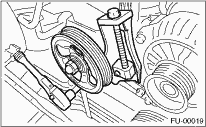
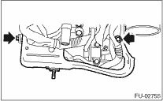
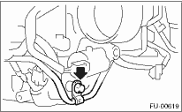

1. Release the fuel pressure. 
2. Disconnect the ground cable from the battery.

3. Open the fuel filler flap lid, and remove the fuel filler cap.
4. Remove the collector cover.
5. Remove the air cleaner upper cover and air intake boot.
6. Remove the air cleaner element.
7. Remove the coolant filler tank.
8. Remove the power steering pump.
(1) Remove the front side V-belt.
(2) Disconnect the power steering switch connector.

(3) Remove the bolts which install the power steering pipe bracket to the intake manifold.
NOTE:
Do not disconnect the power steering hose.

(4) Remove the bolts, which install power steering pump bracket.

(5) Remove the reservoir tank from the bracket by pulling it upward.
(6) Place the power steering pump on the right side wheel apron.

9. Remove the fuel pipe protector RH.

10. Disconnect the connector from fuel injector.

11. Remove the bolt which holds the injector pipe to the intake manifold.


12. Remove the fuel injector while lifting up the fuel injector pipe.

1. Release the fuel pressure.
2. Disconnect the ground cable from the battery.
3. Open the fuel filler flap lid, and remove the fuel filler cap.
4. Remove the collector cover.
5. Remove the intake manifold.
6. Remove the fuel pipe protector LH.

7. Disconnect the connector from fuel injector.
8. Remove the two bolts which hold fuel pipes on the left side of intake manifold.

9. Remove the bolt which holds fuel injector pipe onto intake manifold.


10. Remove the fuel injector while lifting up the fuel injector pipe.